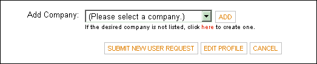
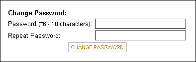

|
Table of Contents 2.2.1 Where to Start
2.2.2 User Details 2.2.3 User Company/Companies 2.2.4 Creating a Company Account 2.2.5 Activating an Administrative Account 3.2.1 Approving a User-Company Relationship
3.2.2 Approving a Company 3.3.1 Adding a User
3.3.2 Editing a User 3.3.2.1 Editing Personal Information
3.3.2.2 Editing Passwords 3.3.3 Deleting Users
3.4.1 Adding Administrators
3.4.2 Removing Administrators 3.4.3 Editing the Administrator Email List 3.5.1 Adding Companies
3.5.2 Editing Companies 3.5.3 Deleting Companies 3.6.1 Adding Vessels
3.6.2 Editing Vessels 3.6.3 Deleting Vessels 3.7.1 Adding Drydock Bookings
3.7.2 Editing Drydock Bookings 3.7.3 Tariff of Dock Charges 3.7.4 Canceling Drydock Bookings 3.7.5 Deleting Past Drydock Bookings 3.8.1 Adding Drydock Maintenance Blocks
3.8.2 Editing Drydock Maintenance Blocks 3.8.3 Canceling/Deleting Drydock Maintenance Blocks 3.9.1 Adding Jetty Bookings
3.9.2 Editing Jetty Bookings 3.9.3 Canceling Jetty Bookings 3.9.4 Deleting Past Jetty Bookings 3.10.1 Adding Jetty Maintenance Blocks
3.10.2 Editing Jetty Maintenance Blocks 3.10.3 Canceling/Deleting Jetty Maintenance Blocks 3.11.1 Calendars
3.11.2 Bookings Summary 3.11.3 Project Calendar 3.12.1 PDF Forms
3.12.2 Tariff of Dock Charges 3.12.2.1 Updating Dock Charges
The Esquimalt Graving Dock (EGD) Online Booking System provides a quick and convenient way to reserve space online for any of the EGD facilities, including the drydock and jetties. The system also allows users to monitor the status of drydock and jetty bookings along with providing access to all required forms. Automatic email notifications are used to alert users of any changes to their accounts or bookings.
An administrator has control over all functionality of the system. Administrators have the ability to add, edit and delete any users, companies or vessels in the system. The booking system gives administrators the ability to make any bookings they wish, short of booking vessels that will not fit into the drydock or booking the same vessel to be in two places at once. The administrators are also expected to monitor company and user account requests, and approve or reject them. return to index Before logging in, ensure that your browser meets the following system requirements:
return to index
2.2.1 Where to Start
To create an account, go to the main EGD page: http://www.pwgsc.gc.ca/pacific/egd/index-e.html and click on "Booking" in the side menu bar. Then click on the "Booking Application" link. This brings you to the booking login page; here, click on "Add new user account." Now user details can be entered, including: first name, last name, 6-10 character password and email address, all of which are required. The email address provided will be used for logging in and receiving email notifications from EGD administrators. Your password is not case-sensitive, so using uppercase letters is not any different from using lowercase. It is recommended that you make your password more robust by using a combination of letters and numbers.
2.2.3 User Company/Companies
Continuing to the next page allows you to add to your profile the company or companies that you represent. To do so, select the company that you represent from the drop down menu and click "add." This can be repeated as many times as necessary. If the company that you represent is not listed, see 2.2.4. Being associated with a company is required for logging in to the system. As an administrator you will likely only need to be associated with the administrating company (EGD). If you are unsure of which company to add yourself to, contact the current EGD administration using the "Contact Us" link in the side menu bar (Figure 1).
Figure 1: Side menu bar
2.2.4 Creating a Company Account
Underneath the drop down menu, it says, "If the desired company is not listed, click here to create one" as shown in Figure 2 below. Click on the link "here" to proceed. This link takes you to a page where you can enter all your company's details, every field is required except "Address 2" and "Fax" ("Province / State" and "Postal Code / Zip Code" should only be completed if applicable). Clicking "Submit" will create the company account and send email notification to EGD administration of the new company request. The company will have to be approved before becoming active.

Figure 2: Adding a new company
2.2.5 Activating an Administrative Account Once all your companies have been added, click "Submit New User Request." This will submit your account request, and send e-mail notification to the current EGD administration. Your account will have to be approved before it becomes active. Administrators can approve individual user-company associations, so if you have added multiple companies to your profile, they do not all need to be approved for your account to become active.
You will receive email notification when one of your user-company associations is approved or rejected. However, you will not have administrative access until your account has been converted to an administration account by an existing administrator.
Once you have received email notification that one of your user-company associations has been approved, you may login as a general user at http://www.pwgsc.gc.ca/pacific/egd/ols-login/ols-login.cfm using the email address and password that you specified upon creating your account.
return to index However, you will not have administrative access until your account has been converted to an administration account by an existing administrator. Once you have been approved as an administrator, you will be automatically taken to the administration home page upon logging in.
If you have forgotten your password, click on the "Forgot password" link at http://www.pwgsc.gc.ca/pacific/egd/ols-login/ols-login.cfm . Enter the email address that you use to login, and your password will be emailed to you promptly.
return to index Upon logging in, you will be presented with the booking system "Administrative Functions" page. You can access all of the administrative functionality from this page. All major functions are also readily available in the menu bar (Figure 3) just below the title of each page. You also have the option of navigating throughout the site at any time using the breadcrumbs displayed between the EGD banner and the page title (Figure 4). Breadcrumbs track the path you have taken through the site, so they can be used to navigate backwards through the pages used to get to where you currently are.
Figure 3: Menu bar
Figure 4: Breadcrumbs
3.2.1 Approving a User-Company Relationship
You will be alerted of pending user-company approvals at the top of the "Administrative Functions" page just below the page title as shown in Figure 5. There is a line that states how many user company requests need to be approved. You can approve a user-company relationship either by clicking on the link within that sentence, or by clicking on the "Approve" button under the "Users" heading.
The "User Approval" page lists the requests by company, with each user awaiting approval to represent that company underneath the company heading. The company heading is a link, which links to a pop-up displaying the company details. If a user listing does not have an "Approve" button next to it, then the company is still pending approval and must be approved first. Regardless of whether you approve or reject a user company request, the user will receive email notification of the status of their request. Upon rejection of of a company, if the user is not attached to any other company relationships, the user account will be deleted. Doing so will allow the user to input a request at a later date. 3.2.2 Approving Companies
You will be alerted of pending company approvals at the top of the "Administrative Functions" page just below the user-company approvals alert (Figure 5). There is a line that states how many company requests need to be approved. You can approve a company either by clicking on the link within that sentence, or by clicking on the "Approve" button under the "Companies" heading.
In order to approve a company, you must first enter the company abbreviation into the text field labeled "Abbrev." This abbreviation must be unique to the system as the abbreviation is used to display a vessel's company in the bookings summary. If you choose to reject the company, it will be deleted from the system and all users that were pending approval to represent the company will receive email notification of the company rejection. Figure 5: Approval alerts
3.3.1 Adding a User
To add a user, click the "Add" button under the "Users" heading. From there, refer to 2.2.2 through 2.2.4. The process is much like that of creating a new user account for yourself. The user will receive automatic email notification of their new account. Any user-company relationships and any new companies created during this process will be automatically approved.
3.3.2 Editing a User
To edit a profile, including your own, click "Edit" under the "Users" heading. The "Edit User Profile" page will automatically default to your profile. The page is divided into three sections with individual submit buttons for each.
3.3.2.1 Editing Personal Information
The first section (Figure 6) is used to edit first and last names. Email addresses cannot be edited as they act as login IDs. In order to use a different email address, you would have to create a new user account for yourself or the user.
Figure 6: Editing user name
Figure 7: Editing user company associations
3.3.2.2 Editing Passwords
The third section (Figure 8) is for changing a user's password. A password for the EGD system must be 6-10 characters long. Passwords are not case-sensitive, so using uppercase letters is not any different from using lowercase.
It is recommended that you make passwords more robust by using a combination of letters and numbers. Frequently changing your own password will also increase the security of your account. 
Figure 8: Editing user password
3.3.3 Deleting Users
To delete a user, click on the "Delete" button under the "Users" heading. Select the company that the user represents from the "Company" drop down menu - if the user represents more than one company, you may select any of them. Then select the user from the subsequent "User" drop down menu and click the "Delete" button.
If the user represents more than one company, the confirmation page will present you with two options: to remove the user only from the company that you originally selected, or to delete the user's account from the system completely. If the user is only associated with one company, the only option will be to delete the user's account from the system.
3.4.1 Adding Administrators
To add an administrator, click on the "Add" button under the "Administrators" heading. Select the desired user, and click "Submit."
3.4.2 Removing Administrators
To remove an administrator, click on the "Remove" button under the "Administrators" heading. Select the desired user, and click "Remove." Note that this does not delete the user, it simply removes their administrative access, converting them back to a regular user.
3.4.3 Editing the Administrator Email List
The administrator email list consists of all administrators that are to receive any automatic email notifications sent via user actions. To edit this list, click on "Edit Email List" under the "Administrators" heading. You can then add or remove any administrators from this list using the check boxes. Then click "Submit" to submit the new list.
3.5.1 Adding Companies
To add a new company, click on the "Add" button under the "Companies" heading. All fields are required except "Address 2", "Province / State", "Postal Code / Zip Code", and "Fax." Both the company name and abbreviation must be unique to the system. The abbreviation is used to display a vessel's company in the bookings summary. Upon submitting the company details, the company profile will be automatically approved and added to the system.
3.5.2 Editing Companies
To edit a company, click on the "Edit" button under the "Companies" heading. Select the company name from the drop down menu and click "View." From here you can edit any of the company details. Keep in mind that all fields are required except "Address 2", "Province / State", "Postal Code / Zip Code", and "Fax," and the name and abbreviation must be unique to the system.
3.5.3 Deleting Companies
To delete a company, click on the "Delete" button under the "Companies" heading. Select the company name from the drop down menu and click "Delete."
A company can only be deleted if it meets the following requirements: it must not have any confirmed bookings associated with it, it must not have any vessels associated with it, and it must not have any users associated with it that do not belong to any other companies. If the company does not meet these requirements, you will receive a notification page stating what action needs to be taken in order to delete the company. If a company is eligible for deletion, you will receive a confirmation page and be able to delete the company from the system.
3.6.1 Adding Vessels
To add a vessel, click on "Add" under the "Vessels" heading. Select a company using the drop down menu. All fields are required for creating a vessel record. Length and width are required in meters and block setup and teardown times are required in days.
If you choose to make the vessel anonymous, any bookings made for this vessel will be shown as anonymous bookings in the calendars and booking summaries. This means that only the dates of the booking and the status are displayed while the booking is either pending or tentative. Once a booking is confirmed, the following additional information about the vessel and booking is released: the company, vessel name and length, sections booked and booking time. Any other information about the vessel or booking is withheld from other companies' users. However, as an administrator you will still have access to all the booking and vessel information whether the vessel is anonymous or not. 3.6.2 Editing Vessels
Click on "Edit" under the "Vessels" heading. Select the vessel's company and the vessel name from the drop down menus and click "Edit." From here you will be able to edit any of the vessel's details except the company that it belongs to.
3.6.3 Deleting Vessels
Click on "Delete" under the "Vessels" heading. Vessels can only be deleted if they do not have any booking requests associated with them. If they do, you will receive a message displaying the bookings for that vessel which will need to be canceled before the vessel can be deleted. If you can delete the vessel, you will receive a confirmation page for deletion.
Drydock booking management can be accessed either from the main "Administrative Functions" page or through the "Drydock Bookings" button in the top menu bar.
The "Drydock Booking Management" page allows you to view any range of bookings by selecting a date range at the top of the page. The page automatically defaults to display all the bookings for next 30 days, including all current bookings. You can enter the dates either manually in the required "mm/dd/yyyy" format, or by using clicking the "Calendar" buttons to the right. By clicking on one of the calendar buttons, a small calendar will pop up and you can simply click on the desired date. This date will be automatically entered into the associated date box. You can also choose to look at only confirmed, tentative or pending bookings, or any combination of the three types by selecting the check boxes. Clicking the "Submit" button will update the page to reflect your selections. The page lists both vessel bookings and maintenance blocks. To view further details for a specific booking, click on the vessel name, or click "Expand All" at the top of the table to view details for all bookings. To collapse the details, click on the vessel name again or on "Collapse All." 3.7.1 Adding Drydock Bookings
Click on "Add New Drydock Booking" at the top or bottom of the table. All fields are required for booking requests. Therefore, the company, vessel and agent must be selected using the drop down menus, and the start and end dates for the booking must be specified. The agent selected will be associated with the booking and will receive any email notification associated with the booking.
You can enter the dates in the manner explained above. When selecting docking dates, be sure to consider the amount of time needed for block setup and teardown. (Note: Docking dates are inclusive, i.e. a three day booking is denoted as May 1 to May 3.) You must also specify a status for the booking. Should you choose to set the booking as confirmed, you may also need to specify the drydock section(s) for the booking on the following page. Upon submitting this booking, if the drydock is available for booking, the booking system will assign a section to the booking and the booking will be added. If there isn't an open slot for the specified date range, you will be given a list of all conflicting confirmed bookings. You can choose to force the booking in by submitting it anyway, or return to the previous page and select a new date range. If you have set the booking status as confirmed, and you wish to force the booking in, you must select the section(s) for the booking. If the booking status is pending or tentative, the booking will be added to the wait list for that slot. Once you have submitted a booking, email notification is sent to selected agent informing them that a booking has been made on their behalf. 3.7.2 Editing Drydock Bookings
To edit a drydock booking, click the "Edit Booking" link in the booking's details. This will allow you to change the agent associated with the booking as well as the start and end dates, and status of the booking. You can also edit the status directly from the booking's details by clicking on the "Make Pending," "Make Tentative" and "Make Confirmed" buttons.
If you confirm a booking, and there is space for the vessel during that time slot, the section(s) will be automatically assigned and the booking will be confirmed. If there are confirmed bookings that conflict with this booking, you will be asked if you want to force the booking in by confirming it anyway. To do so, you will need to manually specify the section(s) using the check boxes. 3.7.3 Tariff of Dock Charges
The Tariff of Dock Charges is generally left for the user to fill out, but administrators have access to view and edit the tariff form. Just click on "View/Edit Tariff Form" under the booking's details.
3.7.4 Canceling Drydock Bookings
Both current and future bookings can be canceled. By clicking on "Cancel Booking" in the booking's details, the booking will be canceled and removed from the system, and the agent responsible for the booking will receive email notification of the cancellation. If the agent is no longer with the company, you will be prompted to notify the company directly.
You will then be presented with a waiting list of all tentative and pending bookings that will now fit into that time slot. It is the administrator's responsibility to contact agents or companies to give 24 hour notice of the cancellation. 3.7.5 Deleting Past Drydock Bookings
Past bookings can be deleted by clicking the "Delete Booking" button in the booking's details. This will remove the booking from the system; neither administrators nor agents will be able to view this booking.
3.8.1 Adding Drydock Maintenance Blocks
To add a maintenance block, click on the "Add New Maintenance Block" button at the top of the Maintenance table. All fields are required for a maintenance block, so enter the date range for maintenance and the section(s) that will be affected.
If the block conflicts with any confirmed bookings, upon clicking "Submit" you will receive a warning message listing the bookings involved. You may choose to submit the maintenance block anyway, or go back to change the date range. Otherwise, the maintenance block will be booked. 3.8.2 Editing Drydock Maintenance Blocks
Click on the "Edit" link next to the maintenance block. This allows you to edit the date range and section(s). If the block conflicts with any confirmed bookings, upon clicking "Submit" you will receive a warning message listing the bookings involved. You may choose to submit the maintenance block anyway, or go back to change the date range. Otherwise, the maintenance block will be booked.
3.8.3 Canceling/Deleting Drydock Maintenance Blocks
Click on the "Cancel" or "Delete" link next to the maintenance block. When canceling, you may be presented with a wait list of tentative and pending bookings that can now fit into the available time slot. It is the administrator's responsibility to contact the agents or companies to give them 24 hours notice of the available slot.
Jetty booking management can be accessed either from the main "Administrative Functions" page or through the "Jetty Bookings" button in the top menu bar.
The "Jetty Booking Management" page allows you to view any range of bookings by selecting a date range at the top of the page. You can change the dates either manually in the required "mm/dd/yyyy" format, or by using clicking the "Calendar" buttons to the right. By clicking on one of the calendar buttons, a small calendar will pop up and you can simply click on the desired date. This date will be automatically entered into the associated date box. You can also choose to look at only confirmed or pending bookings, or both by selecting the check boxes. Clicking the "Submit" button will update the page to reflect your selections. The page lists both vessel bookings for the North Landing Wharf and the South Jetty as well as maintenance blocks. To view further details for a specific booking, click on the vessel name, or click "Expand All" at the top of the table to view details for all bookings. To collapse the details, click on the vessel name again or on "Collapse All." 3.9.1 Adding Jetty Bookings
Click on "Add New North Landing Wharf / South Jetty Booking" at the top or bottom of the tables. All fields are required for jetty bookings. The company, vessel and agent can be selected using the drop down menus. The agent selected will be associated with the booking and will receive any email notification associated with the booking.
The start and end dates for the booking can be specified in the same manner as described above. (Note: Booking dates are inclusive, i.e. a three day booking is denoted as May 1 to May 3.) The status and desired jetty must also be selected. Upon submitting the booking request, email notification will be sent to the specified agent informing them that the booking has been made on their behalf. 3.9.2 Editing Jetty Bookings
To edit a jetty booking, click on the "Edit Booking" link in the booking's details. This will allow you to edit the agent, the start and end dates, the selected jetty and the status of the booking. You can also edit the status directly from the booking's details by clicking on the "Make Pending" and "Make Confirmed" buttons.
3.9.3 Canceling Jetty Bookings
Only future and current bookings can be canceled. To cancel a jetty booking, click on the "Cancel Booking" button in the booking's details. This will present you with a confirmation page, and upon confirming the cancellation, email notification will be sent to the agent associated with the booking.
3.9.4 Deleting Past Jetty Bookings
Past bookings can be deleted by clicking the "Delete Booking" button in the booking's details. This will remove the booking from the system; neither administrators nor agents will be able to view this booking.
return to index
3.10.1 Adding Jetty Maintenance Blocks
To add a maintenance block, click on the "Add New Maintenance Block" button at the top of the Maintenance table. All fields are required for a maintenance block, so enter the date range for maintenance and the section(s) that will be affected.
If the block conflicts with any confirmed bookings, upon clicking "Submit" you will receive a warning message listing the bookings involved. You may choose to submit the maintenance block anyway, or go back to change the date range. Otherwise, the maintenance block will be booked. 3.10.2 Editing Jetty Maintenance Blocks
Click on the "Edit" link next to the maintenance block. This allows you to edit the date range and jetty, or jetties. If the block conflicts with any bookings, upon clicking "Submit" you will receive a warning message listing the bookings involved. You may choose to submit the maintenance block anyway, or go back to change the date range. Otherwise, the maintenance block will be booked.
3.10.3 Canceling/Deleting Jetty Maintenance Blocks
Click on the "Cancel" or "Delete" link next to the maintenance block. The maintenance block will be removed from the system.
return to index
3.11.1 Calendars
The drydock and jetty calendars are accessible through the main "Administrative Functions" page as well as the top menu bar. Both one month and three month views are available (Figure 9). They default to the current month, but any month can be viewed using the drop down menus.
Each day displays a summary of the confirmed bookings for each section or jetty, as well as how many pending and tentative bookings there are for that day. If you click on the day, you can view a more detailed summary of the bookings for that day, showing the name of the vessel, the booking agent, the status, the section(s) or jetty and the docking dates for each booking. There is also a link to view even further details about the booking and vessel. From this detail page, you have the ability to view or edit the tariff form, edit the booking and cancel or delete the booking. 3.11.2 Bookings Summary
Accessible from any of the calendar pages, there is a link to "bookings summary" just under the top menu bar (Figure 9). The bookings summary is a table version of the information provided in the calendars, displayed in the same format as the old bookings summary spreadsheet. It displays the company, the vessel name and length, the booking status, the section(s) or jetty, the docking dates and the date the booking was requested. There is also a printer friendly version of the bookings summary available by clicking the "View Printable Version" button on the bookings summary page.
3.11.3 Project Calendar
Accessible from any of the calendar pages, there is a link to "project calendar" just under the top menu bar (Figure 9). The project calendar is an MSProject style view of drydock bookings. When you click on the "project calendar" link, you are presented with a pop-up window. Here you can select a date range for which you would like to view the bookings.
The project calendar provides the vessel name, docking dates and booking status. You can view the details for all bookings for a particular date, including jetty bookings, by clicking the date link in the left-hand column (Figure 10). There are explicit printing instructions at the top of the project calendar should you wish to print it. Figure 9: Booking overview menu
 Figure 10: Project calendar date column
return to index All of the EGD booking forms are available from the main "Administrative Functions" page by clicking on the "Booking Forms" button under the heading "Bookings."
3.12.1 PDF Forms
Schedule 1, the Indemnification Clause and the Tentative Vessel and Change Booking Form are all available in PDF format via the Booking Forms page. Adobe Acrobat Reader is required for viewing them. Click on the words "Adobe Acrobat Reader" to download the software.
3.12.2 Tariff of Dock Charges
The Tariff of Dock Charges is available in HTML format so that it can be filled out online, and to allow administrators to update the fees.
3.12.2.1 Updating Dock Charges
To update the fees displayed on the tariff form, click the "Update" button next to the form link. From here, you can enter updated prices for those services and facilities with fixed rates or check the "prices vary" box to indicate such. Note that if the prices vary box is checked, any fixed price specified will be disregarded.
To add, edit or remove the introduction message which shows up in the main menu for both users and admins, click on the "Edit Intro Message" button. Once clicked, there will be a textbox to store information that will show up in a block on the main page. Once the message is inserted, click on the "Update" button and the message will be edited. To set the block to invisible, delete any text in the text box and click "Update". Until text is re-entered, the yellow block will not show up for users or admins.
return to index
To log out click the "Logout" button in the top menu bar. Always log out to ensure that your session has been ended to prevent other people from entering your account on shared computers.
return to index |